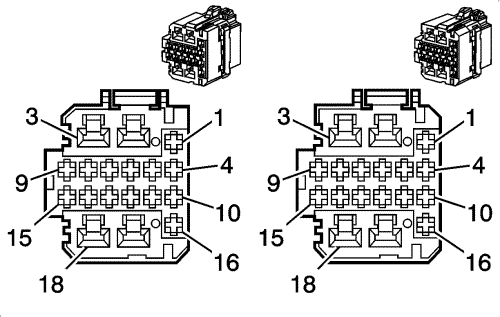
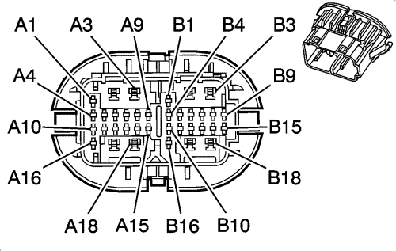

Captiva |
||||||||
|
|
|
|||||||
|
 |
 |
Información de parte de conector
| Información de parte de conector
|
Información de parte de terminal
| Información de parte de terminal
|
Bulón | Tamaño | Color | Circuito | Función | Opción | Bulón | Tamaño | Color | Circuito | Opción |
|---|---|---|---|---|---|---|---|---|---|---|
1 | 0.3 | GY/BK | 745 | Señal del interruptor de la puerta delantera izquierda entreabierta | -- | A1 | 0.3 | TN/WH | 746 | Volante a la izquierda |
GY/BK | 745 | Volante a la derecha | ||||||||
2 | 0,5 | BK | 450 | Toma de tierra | -- | A2 | 0,5 | BK | 450 | Volante a la izquierda |
0,5 | BK | 550 | Volante a la derecha | |||||||
3 | 2.0 | YE | 643 | Tensión accesoria | Base de rueda corta con A31 | A3 | 1.25 | YE | 643 | Volante a la derecha con A31 |
2.0 | YE | 743 | Tensión accesoria | Base de rueda larga con A31 | 1.25 | YE | 743 | Volante a la izquierda con A31 | ||
4 | 0,5 | L-BU | 191 | Control de retracción del motor del espejo plegable izquierdo | Base de rueda corta con DLR Base de rueda larga | A4 | 0,5 | L-BU | 191 | -- |
5 | 0,5 | OG/WH | 81 | Control hacia la derecha del motor del espejo retrovisor izquierdo | Excepto volante a la izquierda de base de rueda larga | A5 | 0,5 | OG/WH | 881 | Volante a la derecha |
0,5 | OG/WH | 881 | Control hacia la derecha del motor del espejo retrovisor derecho | Volante a la izquierda de base de rueda larga | 0,5 | OG/WH | 81 | Volante a la izquierda | ||
6 | 0,5 | L-GN | 89 | Control hacia abajo del motor del espejo retrovisor izquierdo | Excepto volante a la izquierda de base de rueda larga | A6 | 0,5 | PU/BK | 889 | Volante a la derecha |
PU/WH | 889 | Control hacia abajo del motor del espejo retrovisor derecho | Volante a la izquierda de base de rueda larga | 0,5 | L-GN | 89 | Volante a la izquierda | |||
7 | 0,5 | YE | 1496 | Control hacia la derecha/arriba del motor del espejo | -- | A7 | 0,5 | YE | 1496 | -- |
8 | 0,5 | O | 267 | Tensión del elemento calefactor del retrovisor | -- | A8 | 0,5 | OG | 267 | -- |
9 | 0,5 | GN | 2105 | Control alto del módulo de colisión en el lado izquierdo | -- | A9 | 0,5 | D-GN | 2105 | AJ7, AWX, AY0 |
0,5 | TN | 126 | -- | |||||||
10 | 0,5 | YE | 190 | Control de extensión del motor del espejo plegable izquierdo | Base de rueda larga y base de rueda corta con DLR | A10 | 0,5 | YE | 190 | DLR |
11 | 0,5 | YE | 343 | Tensión accesoria | Base de rueda corta con DMA | A11 | 0.3 | YE | 343 | Base de rueda corta con DMA |
0,5 | GY/BK | 690 | Control del relé de las luces de cortesía | Base de rueda larga | 0,5 | GY/BK | 690 | Base de rueda larga | ||
12 | -- | -- | -- | No se utiliza | Base de rueda larga | A12 | -- | -- | -- | Base de rueda larga |
0,5 | YE | 1491 | Control de la luz trasera | Base de rueda corta con volante a la izquierda | 0.3 | YE | 1491 | Base de rueda corta con volante a la izquierda | ||
13 | 0,5 | L-BU/WH | 1314 | Tensión de alimentación de la luz del intermitente delantero izquierdo | Base de rueda larga | A13 | -- | D-BU/WH | 1315 | Base de rueda corta |
-- | -- | -- | No se utiliza | -- | 0.3 | L-BU/WH | 1314 | Base de rueda larga | ||
14 | 0,5 | D-BU | 6189 | Señal de desbloqueo interior del maletero/luna trasera | Base de rueda larga | A14 | 0.3 | D-BU | 6189 | Base de rueda larga |
0,5 | L-BU/WH | 280 | Señal trasera derecha del bloqueo del interruptor maestro del elevalunas eléctrico | Base de rueda corta | 1.25 | L-BU/WH | 280 | Base de rueda corta | ||
15 | 0,5 | BN | 2106 | Control bajo del módulo de colisión en el lado izquierdo | AJ7, AWX, AY0 | A15 | 0,5 | BN | 2106 | AJ&, AWX, AY0 |
0,5 | L-GN | 1123 | -- | |||||||
16 | 0,5 | BN | 5910 | Control de bloqueo del actuador de cierre doble de la puerta | -- | A16 | 0.85 | BN | 5910 | -- |
17 | 0,5 | GY | 118 | Señal del altavoz delantero izquierdo (-) (1) | -- | A17 | 0,5 | D-GN | 117 | Volante a la derecha |
0,5 | D-GN | 118 | Volante a la izquierda | |||||||
0,5 | PU | 1952 | Volante a la derecha con UW6 | |||||||
0,5 | PU | 1956 | Volante a la izquierda con UW6 | |||||||
18 | 0,5 | TN | 201 | Altavoz delantero izquierdo (+) (1) | -- | A18 | 0,5 | L-GN | 200 | Volante a la derecha |
0,5 | TN | 201 | Volante a la derecha con UW6 | |||||||
0,5 | L-GN | 1852 | Volante a la derecha | |||||||
0,5 | TN | 1856 | Volante a la izquierda con UW6 | |||||||
1 | -- | -- | -- | No se utiliza | Base de rueda larga | B1 | -- | -- | -- | Base de rueda larga |
1.25 | PU | 3386 | Señal de movimiento automático de la ventanilla eléctrica del acompañante desde el interruptor | Base de rueda corta | 1.25 | PU | 3386 | Base de rueda corta | ||
2 | 1.25 | GY | 1136 | Señal de bajada delantera izquierda del interruptor maestro del elevalunas eléctrico | Volante a la derecha | B2 | 1.25 | TN | 167 | Volante a la izquierda |
1.25 | TN | 167 | Señal de bajada delantera derecha del interruptor maestro del elevalunas eléctrico | Volante a la izquierda | 1.25 | GY | 1136 | Volante a la derecha | ||
3 | 1.25 | TN | 1300 | Señal de subida delantera izquierda del interruptor maestro del elevalunas eléctrico | Volante a la derecha | B3 | 1.25 | L-BU | 166 | Volante a la izquierda |
L-BU | 166 | Señal de subida delantera derecha del interruptor maestro del elevalunas eléctrico | Volante a la izquierda | 1.25 | PU | 1300 | Volante a la derecha | |||
4 | -- | -- | -- | No se utiliza | Volante a la derecha | B4 | 1.25 | BN | 5910 | Base de rueda corta con AF8 |
1.25 | D-GN | 5048 | Señal de movimiento rápido de la ventanilla eléctrica trasera izquierda desde el interruptor | Base de rueda larga con volante a la izquierda | 1.25 | D-GN | 5048 | Base de rueda corta con volante a la izquierda | ||
5 | -- | -- | -- | No se utiliza | Volante a la derecha | B5 | 1.25 | D-GN | 168 | -- |
1.25 | D-GN | 168 | Señal de subida trasera izquierda del interruptor maestro del elevalunas eléctrico | Base de rueda larga con volante a la izquierda | ||||||
6 | -- | -- | -- | No se utiliza | Volante a la derecha | B6 | 1.25 | PU | 169 | Base de rueda corta |
1.25 | PU | 169 | Señal de bajada trasera izquierda del interruptor maestro del elevalunas eléctrico | Base de rueda larga con volante a la izquierda | ||||||
7 | 0.3 | L-GN | 1123 | Señal de bloqueo del interruptor de la cerradura de la puerta | Volante a la derecha | B7 | 1.25 | L-GN | 170 | Base de rueda corta |
0.3 | L-GN | 170 | Señal de subida trasera derecha del interruptor maestro del elevalunas eléctrico | Volante a la izquierda | ||||||
8 | -- | -- | -- | No se utiliza | Volante a la derecha | B8 | 1.25 | PU | 171 | Base de rueda corta |
1.25 | PU | 171 | Señal de bajada trasera derecha del interruptor maestro del elevalunas eléctrico | Volante a la izquierda | ||||||
9 | -- | -- | -- | No se utiliza | Volante a la derecha | B9 | -- | -- | -- | Base de rueda larga |
1.25 | YE | 5439 | Bajada rápida con interruptor maestro | Base de rueda corta | 1.25 | YE | 5439 | Base de rueda corta | ||
10 | -- | -- | -- | No se utiliza | Volante a la derecha | B10 | 0,5 | D-BU | 2104 | AJ7, AWX, AY0 |
0.3 | TN | 126 | Señal del interruptor de la puerta delantera izquierda abierta | Volante a la izquierda | 0,5 | TN | 126 | Base de rueda corta sin AJ7, AWX, AY0 | ||
11 | -- | -- | -- | No se utiliza | Volante a la derecha | B11 | 0,5 | GY | 2103 | AJ7, AWX, AY0 |
0.3 | L-GN | 1123 | Señal de bloqueo del interruptor de la cerradura de la puerta | Volante a la izquierda | 0,5 | L-GN | 1123 | Base de rueda corta sin AJ7, AWX, AY0 | ||
B12 | -- | -- | -- | No se utiliza | Volante a la derecha | B12 | 0,5 | PU | 1124 | Base de rueda corta |
0.3 | PU | 1124 | Señal de desbloqueo del interruptor de la cerradura de la puerta | Volante a la izquierda | ||||||
13 | 0.3 | PU | 1124 | Señal de desbloqueo del interruptor de la cerradura de la puerta | Volante a la derecha | B13 | 0,5 | PK/BK | 780 | Base de rueda corta |
0.3 | PK/BK | 780 | Señal de bloqueo del interruptor de bloqueo de la puerta del conductor | Volante a la izquierda | ||||||
14 | -- | -- | -- | No se utiliza | Volante a la derecha | B14 | 0,5 | OG/BK | 781 | Base de rueda corta |
0.3 | OG/BK | 781 | Señal de desbloqueo del interruptor de bloqueo de la puerta del conductor | Volante a la izquierda | ||||||
B15 | 0.85 | TN | 294 | Control de desbloqueo del actuador de cierre de la puerta | -- | B15 | 0.85 | TN | 294 | -- |
0.85 | TN | 694 | Control de desbloqueo del actuador de cierre de la puerta del conductor | Volante a la derecha | ||||||
B16 | 0.85 | GY | 295 | Control de bloqueo del actuador de cierre de la puerta | -- | B16 | 0.85 | GY | 295 | -- |
B17 | 0.85 | D-BU | 1307 | Señal de bloqueo del interruptor maestro del elevalunas eléctrico | Volante a la izquierda | B17 | 0,5 | D-BU | 1307 | Base de rueda corta |
B18 | 1.25 | YE | 643 | Tensión accesoria | Volante a la izquierda | B18 | 0,5 | YE | 643 | Base de rueda corta |
1.25 | YE | 743 | Tensión accesoria | Base de rueda corta con volante a la derecha | ||||||
1.25 | D-BU | 1307 | Señal de bloqueo del interruptor maestro del elevalunas eléctrico | Base de rueda larga con volante a la derecha |
| © Copyright Chevrolet Europe. All rights reserved |